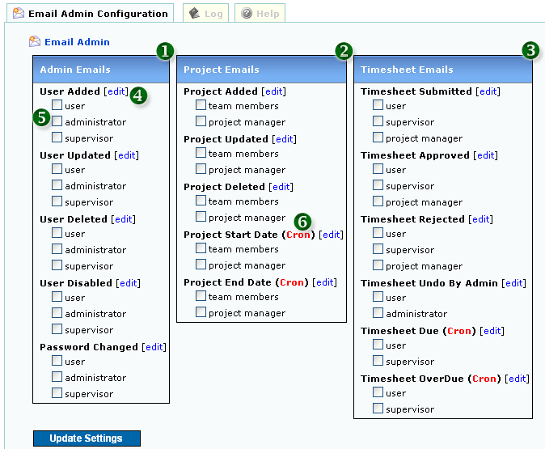
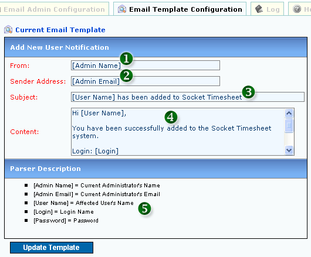

<table class="no-border" cellpadding=3 cellspacing=3>
<tr><td>
	<H1>1. Email Admin</H1>
	<pre align="left">     
	<strong>Figure 1: Email Admin</strong></pre>
	<ol>
		<li><strong>1. ADMIN RELATED EMAILS:</strong> Emails related to Admin Activities listed here</li>
		<li><strong>2. PROJECT RELATED EMAILS:</strong> Emails related to Project Activities listed here</li>
		<li><strong>3. TIMESHEET RELATED EMAILS:</strong> Emails related to Timesheet Activities listed here</li>
		<li><strong>4. EDIT TEMPLATE VIA TEMPLATE EDITOR:</strong> Change the default template to your requirements via Template Editor</li>
		<li><strong>5. CHECK TO ENABLE EMAIL SENDING:</strong> Enable the Email Sending feature for this activity</li>
		<li><strong>6. CRON BASED AUTOMATED EMAIL SENDING:</strong> For Linux/Unix/FreeBSD Cron Based Email. Refer <a href="../admin/list_cronfiles.php">Admin System-Execute Cron Files</a> </li>
	</ol>
	<H1>2. Template Editor</H1>
	Click the "[<a href=#>Edit</a>]" link to access Template Editor page for particular Email Template
	<pre align="left">     
	<strong>Figure 2: Template Editor</strong></pre>
	<ol>
		<li><strong>1. EMAIL FROM</strong></li>
		<li><strong>2. SENDER EMAIL ADDRESS</strong></li>
		<li><strong>3. EMAIL SUBJECT</strong></li>
		<li><strong>4. EMAIL CONTENT</strong></li>
		<li><strong>5. PARSER DESCRIPTION:</strong> Items inside the tag [xxxxxxx] will be replaced as per the Parser Description</li>
	</ol>
</td></tr>
</table>